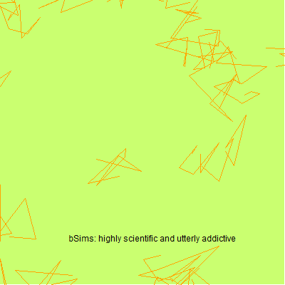

Point count data analysis: How to violate assumptions and get away with it
2019-06-21
Preface

This book provides material for the workshop Analysis of point-count data in the presence of variable survey methodologies and detection error at the AOS 2019 conference by Peter Solymos.
The book and related materials in this repository is the basis of a full day workshop (8 hours long with 3 breaks).
Prior exposure to R language is necessary (i.e. basic R object types and their manipulation, such as arrays, data frames, indexing) because this is not covered as part of the course. Check this intro.
About the book and the course
You’ll learn
- how to analyze your point count data when it combines different methodologies/protocols/technologies,
- how to violate assumptions and get away with it.
This book/course is aimed towards ornithologists analyzing field observations, who are often faced by data heterogeneities due to field sampling protocols changing from one project to another, or through time over the lifespan of projects, or trying to combine ‘legacy’ data sets with new data collected by recording units. Such heterogeneities can bias analyses when data sets are integrated inadequately, or can lead to information loss when filtered and standardized to common standards. Accounting for these issues is important for better inference regarding status and trend of bird species and communities.
Analysts of such ‘messy’ data sets need to feel comfortable with manipulating the data, need a full understanding the mechanics of the models being used (i.e. critically interpreting the results and acknowledging assumptions and limitations), and should be able to make informed choices when faced with methodological challenges.
The course emphasizes critical thinking and active learning. Participants will be asked to take part in the analysis: first hand analytics experience from start to finish. We will use publicly available data sets to demonstrate the data manipulation and analysis. We will use freely available and open-source R packages.
The expected outcome of the course is a solid foundation for further professional development via increased confidence in applying these methods for field observations.
Installing R and RStudio
Follow the instructions at the R website to download and install the most up-to-date base R version suitable for your operating system (the latest R version at the time of writing these instructions is 3.6.0).
Having RStudio is not absolutely necessary, but some of our course material will follow a syntax that is close to RStudio’s R markdown notation, so having RStudio will make our life easier. RStudio is also available for different operating systems. Pick the open source desktop edition from here (the latest RStudio Desktop version at the time of writing these instructions is 1.2.1335).
Installing required packages
pkgs <- c("bookdown", "detect", "devtools", "dismo",
"Distance", "forecast",
"glmnet", "gbm", "intrval", "knitr", "lme4", "maptools", "mefa4",
"mgcv", "MuMIn", "opticut", "partykit", "pscl", "raster",
"ResourceSelection", "shiny", "sp", "unmarked", "visreg")
to_inst <- setdiff(pkgs, rownames(installed.packages()))
if (length(to_inst))
install.packages(to_inst, repos="https://cloud.r-project.org/")
devtools::install_github("psolymos/bSims")
devtools::install_github("psolymos/QPAD")
devtools::install_github("borealbirds/paired")
devtools::install_github("borealbirds/lhreg")
still_missing <- setdiff(c(pkgs, "bSims", "paired", "lhreg", "QPAD"),
rownames(installed.packages()))
if (length(still_missing)) {
cat("The following packages could not be installed:\n",
paste("\t-", pkgs, collapse="\n"), "\n")
} else {
cat("You are all set! See you at the workshop.\n")
}Here is a preprint version of Norman Matloff’s The Art of R Programming book: http://heather.cs.ucdavis.edu/~matloff/132/NSPpart.pdf. Check out Chapters 1–6 if you want to brush up your R skills.
Installing the book
The bookdown package can be installed from CRAN or Github:
install.packages("bookdown")
# or the development version
# devtools::install_github("rstudio/bookdown")
## clean up
bookdown::clean_book(TRUE)
## rendering the book
bookdown::render_book('index.Rmd', 'bookdown::gitbook')
bookdown::render_book('index.Rmd', 'bookdown::pdf_book')
bookdown::render_book('index.Rmd', 'bookdown::epub_book')To compile this example to PDF, you need XeLaTeX. You are recommended to install TinyTeX (which includes XeLaTeX): https://yihui.name/tinytex/.
How this works
Acknowledgments
List here all the wonderful folks who helped with this book.